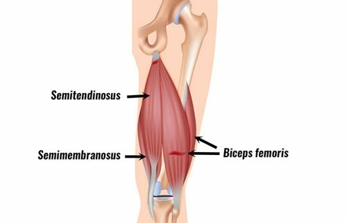

대퇴이두근이란..?
대퇴이두근이란 허벅지의 뒤쪽에 위치한 근육으로 무릎과 엉덩이에 영향을 미치는 영향력이 큰 근육이다.

사진에서 보이는것처럼 위치하는 대퇴이두근은 두갈래로 이루어져 있는데 하나는 엉덩이에서, 하나는 허벅지에서 발생한다.
이러한 대퇴이두근은 고관절과 무릎 관절을 모두 가로 지르므로 두 관절 모두에서 동작을 수행하는 근육이다.
▶무릎의 굴근
▶엉덩이 확장과 허벅지의 측면 회전
이러한 역할을 수행하는 대퇴이두근은 강한 하체를 원하는 사람에게는 모두 필수적으로 필요한 근육이다. 즉 단단하고 우람한 허벅지 근육을 원하는 남성 뿐만아니라 체지방이 거의 없는 매끄러운 다리를 원하는 여성에게도 중요한 근육이라고 할 수 있다.
이러한 후면이지만 무시할 수 없는 대퇴이두근을 운동하기 위해서는 어떤 운동이 있을까? 그에 대한 답변을 위해 유튜브
설기관에서 정보를 가져왔다
이렇게 대퇴이두근의 기능, 생김새, 그리고 위치에 대해서 간단하게 살펴보고 그에 대한 운동법에 대해 알아 보았으니 앞으로 스스로 열심히 운동하여 건강한 다리를 얻길 바란다.